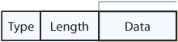
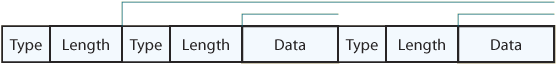
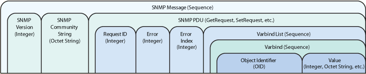
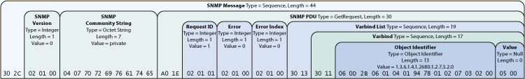

RaneNote RaneNote
SNMP: Simple? Network Management Protocol
Douglas Bruey, Rane Corporation
RaneNote 161, written December 2005
- An SNMP Overview
- The Message Format
- The Actual Bytes
Introduction
Although some RS-232 connectors still cling desperately to audio hardware products around the world, for years Ethernet and the Internet Protocol (IP) have been replacing older serial communication formats as the connection of choice for monitoring and controlling audio as well as video, networking, and industrial equipment. Since the childhood of computer networking, network designers envisioned a world where a person's audio system, video system, HVAC system, and toaster all connect to the same network. To that end, computer scientists developed a protocol capable of managing any network device. The result was SNMP, which stands for Simple Network Management Protocol. SNMP was introduced in 1988 and now includes three distinct versions SNMPv1, SNMPv2, and SNMPv3. Due to the maturity of SNMP, many device manufacturers include support for this protocol in their products, and many SNMP management solutions exist off-the-shelf for common operating systems and programming languages. However, SNMP management capabilities are still lacking for today's control system platforms, requiring control system programmers to write their own SNMP management code.
Of course, writing an SNMP manager should be simple, right? After all, it is the Simple Network Management Protocol. Unfortunately, "Simple" means "easy for computer scientists who spend eight hours a day thinking about designing network protocols." When making the leap from constructing text strings to constructing SNMP messages, the word "Simple" is a cruel joke that leaves control system programmers shouting "Just tell me the bytes to send!"
In answer to that plea, this RaneNote provides a technical overview of SNMPv1, along with the terminology necessary to understand the SNMP message, describe the message format, and show exactly (byte-by-byte) how to construct the SNMP message.
SNMP: Overview
SNMP is the protocol that allows an SNMP manager (the controller) to control an SNMP agent (the controlee) by exchanging SNMP messages. An SNMP message is a packet sent over UDP/IP to port 161. UDP/IP is the User Datagram Protocol over IP. To learn how to get your hardware to send your SNMP message using UDP/IP to port 161, pick your favorite programming language and hit the help files. To learn how to construct an SNMP message, read on.
The main purpose of an SNMP message is to control (set) or monitor (get) parameters on an SNMP agent. In SNMP, a parameter is an instance of a more generic object. For example, an SNMP agent may have several instances of a microphoneMute object -- one instance for each microphone input. An SNMP manager can set or get the value for each instance (each parameter). In an SNMP agent, parameters are arranged in a tree. SNMP uses an Object Identifier (OID) to specify the exact parameter to set or get in the tree. An OID is a list of numbers separated by periods. For example, the OID addressing the microphoneMute parameter in a Rane NM 1 is '1.3.6.1.4.1.2680.1.2.7.3.2.0'. This OID is actually a combination of two values. The first value is the OID of the generic object '1.3.6.1.4.1.2680.1.2.7.3.2'. The second is the instance value, which specifies the particular instance of the mirophoneMute object. The instance value in this case is 0, because the NM 1 has only one microphone input. But where do these OIDs come from?
Every SNMP agent has an address book of all its objects, called the MIB or Management Information Base. The MIB provides the name, OID, data type, read/write permissions, and a brief description for each object in an SNMP agent. For an example, check out the Rane NM 1 MIB in its manual. Armed with information about an object from the MIB, and the instance value, an SNMP manager can send an SNMP message to set or get one of the parameters on an SNMP agent. However, there are two major difficulties that an SNMP message must overcome to be understood by any SNMP device.
All SNMP devices must understand an SNMP message, which presents a couple problems. The first problem exists because different software languages have slightly different sets of data types (integers, strings, bytes, characters, etc). For example, an SNMP manager sending a message full of Java data types may not be understood by an SNMP agent written in C. To solve this problem SNMP uses ASN.1 or Abstract Syntax Notation One to define the data types used to build an SNMP message. Since ASN.1 is independent of any particular programming language, the SNMP agents and managers may be written in any language. However, even when using valid ASN.1 data types another problem still exists. When sending a particular data type over the wire, how should it be encoded? Should strings be null terminated as in the programming language C, or not? Should Boolean values be 8 bits as in C++ or 16 bits as in Visual Basic 6? ASN.1 includes Basic Encoding Rules (BER) to address this problem. Regardless of programming language, all data types are encoded the same way before they are placed on the wire by following the Basic Encoding Rules. In short, all data fields in an SNMP message must be a valid ASN.1 data type, and encoded according to the BER. To send a properly formatted message, the programmer must understand ASN.1 and the Basic Encoding Rules.
ASN.1
Constructing a message requires some knowledge of the data types specified by ASN.1, which fall into two categories: primitive and complex. ASN.1 primitive data types include Integer, Octet (byte, character) String, Null, Boolean and Object Identifier. The Object Identifier type is central to the SNMP message, because a field of the Object Identifier type holds the OID used to address a parameter in the SNMP agent. To expand the programmer's ability to organize data, ASN.1 allows primitive data types to be grouped together into complex data types.
ASN.1 offers several complex data types necessary for building SNMP messages. One complex data type is the Sequence. A Sequence is simply a list of data fields. Each field in a Sequence can have a different data type. ASN.1 also defines the SNMP PDU (Protocol Data unit) data types, which are complex data types specific to SNMP. The PDU field contains the body of an SNMP message. Two PDU data types available are GetRequest and SetRequest, which hold all the necessary data to get and set parameters, respectively. Ultimately the SNMP message is a structure built entirely from fields of ASN.1 data types. However, specifying the correct data type is not enough. If the SNMP message is a Sequence of fields with varying data types, how can a recipient know where one field ends and another begins, or the data type of each field? Avoid these problems by conforming to the Basic Encoding Rules.
Basic Encoding Rules
Follow the Basic Encoding Rules when laying out the bytes of an SNMP message. The most fundamental rule states that each field is encoded in three parts: Type, Length, and Data. Type specifies the data type of the field using a single byte identifier. For a brief table of some data types and their identifiers, see Table 1. Length specifies the length in bytes of the following Data section, and Data is the actual value communicated (the number, string, OID, etc). One way to visualize encoding a field is shown in Figure 1.

Figure 1. Format: BER Encoded Field (Primitive Data Type)
Some data types, like Sequences and PDUs, are built from several smaller fields. Therefore, a complex data type is encoded as nested fields, as shown in Figure 2.

Figure 2. Format: BER Encoded Fields (Complex Data Type)
There are two more Basic Encoding Rules necessary for encoding an SNMP message. Both apply to encoding OIDs. The first rule applies when encoding the first two numbers in the OID. According to BER, the first two numbers of any OID (x.y) are encoded as one value using the formula (40*x)+y. The first two numbers in an SNMP OID are always 1.3. Therefore, the first two numbers of an SNMP OID are encoded as 43 or 0x2B, because (40*1)+3 = 43. After the first two numbers are encoded, the subsequent numbers in the OID are each encoded as a byte. However, a special rule is required for large numbers because one byte (eight bits) can only represent a number from 0-255. For example, the number 2680 in the Rane NM 1 microphoneMute OID '1.3.6.1.4.1.2680.1.2.7.3.2.0' cannot be encoded using a single byte. The rule for large numbers states that only the lower 7 bits in the byte are used for holding the value (0-127). The highest order bit is used as a flag to let the recipient know that this number spans more than one byte. Therefore, any number over 127 must be encoded using more than one byte. According to this rule, the number 2680 must be encoded 0x94 0x78. Since the most significant bit is set in the first byte (0x94), the recipient knows to use the lower 7 bits from each byte (0x14 and 0x78) and decode the two bytes as (0x14 *128) + 0x78 = 2680.
|
Primitive Data Types |
Identifier |
|
Complex Data Types |
Identifier |
|
|
Integer |
0x02 |
|
Sequence |
0x30 |
|
|
Octet String |
0x04 |
|
GetRequest PDU |
0xA0 |
|
|
Null |
0x05 |
|
GetResponse PDU |
0xA2 |
|
|
Object Identifier |
0x06 |
|
SetRequest PDU |
0xA3 |
|
Table 1. Some ASN.1 Data Types
The SNMP Message Format
The SNMP message format specifies which fields to include in the message and in what order. Ultimately, the message is made of several layers of nested fields. At the outer-most layer, the SNMP message is a single field, of the Sequence type. The entire message is a Sequence of three smaller fields: the SNMP Version (Integer), the SNMP Community String (Octet String), and the SNMP PDU (GetRequest, or SetRequest).
Since the SNMP Version and SNMP Community String are primitive data types they are not built from smaller fields (no more layers). However, the PDU is a complex data type made up of several smaller fields (more layers). The PDU is composed of a Request ID (Integer), Error (Integer), Error Index (Integer), and a Varbind List. A Varbind or Variable Binding is a Sequence of two specific fields. The first field is an OID, which addresses a specific parameter. The second field contains the Value of the specified parameter. In a SetRequest, Value must be the same data type specified in the MIB for the parameter being set. In a GetRequest, Value is a Null with length 0x00. This null data is a placeholder for the Value data that the SNMP agent returns using the GetResponse PDU. Furthermore, as the name suggests, a Varbind List is a Sequence of Varbinds. Finally, when a message is setting or getting a single parameter, the Varbind List holds only one Varbind. For an explanation of each field in the SNMP message see Table 2.

Field |
Description |
SNMP message |
A Sequence representing the entire SNMP message consisting of the SNMP version, Community String, and SNMP PDU. |
SNMP Version |
An Integer that identifies the version of SNMP. SNMPv1 = 0 |
SNMP Community String |
An Octet String that may contain a string used to add security to SNMP devices. |
SNMP PDU |
An SNMP PDU contains the body of the SNMP message. There are several types of PDUs. Three common PDUs are GetRequest, GetResponse, SetRequest. |
Request ID |
An Integer that identifies a particular SNMP request. This index is echoed back in the response from the SNMP agent, allowing the SNMP manager to match an incoming response to the appropriate request. |
Error |
An Integer set to 0x00 in the request sent by the SNMP manager. The SNMP agent places an error code in this field in the response message if an error occurred processing the request. Some error codes include: |
|
|
|
|
|
|
Error Index |
If an Error occurs, the Error Index holds a pointer to the Object that caused the error, otherwise the Error Index is 0x00. |
Varbind List |
A Sequence of Varbinds. |
Varbind |
A Sequence of two fields, an Object ID and the value for/from that Object ID. |
Object Identifier |
An Object Identifier that points to a particular parameter in the SNMP agent. |
Value |
SetRequest PDU -- Value is applied to the specified OID of the SNMP agent. |
GetRequest PDU -- Value is a Null that acts as a placeholder for the return data. |
GetResponse PDU -- The returned Value from the specified OID of the SNMP agent. |
Table 2. Fields in the SNMP message
The Actual Bytes
To all the readers joining us at this point, because they are in a hurry, or because they enjoy reading the last chapter of their mystery novels first, welcome. Now is the time to create the SNMP message by applying the Basic Encoding Rules to the fields and laying out the bytes in the correct order. As an example, Figure 3 shows an SNMP GetRequest packet for the microphoneMute parameter on a Rane NM 1 (OID: 1.3.6.1.4.1.2680.1.2.7.3.2.0). It is important to remember that changing the number of bytes of any field in the SNMP message requires changing the Length byte of all the outer layers that enclose the edited field. For example, changing the GetRequest below to a SetRequest that sets the microphoneMute to a Value of 1 (0x01) requires changing the PDU data type to SetRequest (0xA3) and the Value field to an integer (0x04) of length 0x01 and data 0x01. However, increasing the length of the Value field also increases the length of the Varbind, Varbind List, PDU, and SNMP message fields.

Figure 3. SNMP Message Diagram (click to enlarge, right-click to zoom and pan).
 The Rane NM 1 MIB (Management Information Base) is listed in the NM 1 Manual (PDF). The Rane NM 1 MIB (Management Information Base) is listed in the NM 1 Manual (PDF).
References
- Kevin Gross and Tom Holtzen. Controlling and Monitoring Audio Systems with Simple Network Management Protocol (SNMP), presented at the 105th Convention of the Audio Engineering Society, San Francisco, September 26, 1998, preprint no. 4760.
- ITU-T X.690, ASN.1 Encoding Rules Specification, 7/2002.
- Vijay Mukhi's Computer Institute, India: BER SNMP and SNMP.
- The TCP/IP Guide, Version 3.0, Charles M. Kozierok: SNMP Version 1 (SNMPv1) Message Format
- Objective Systems, Inc.: ASN.1
"SNMP: Simple? Network Management Protocol" Download this note in PDF.
|